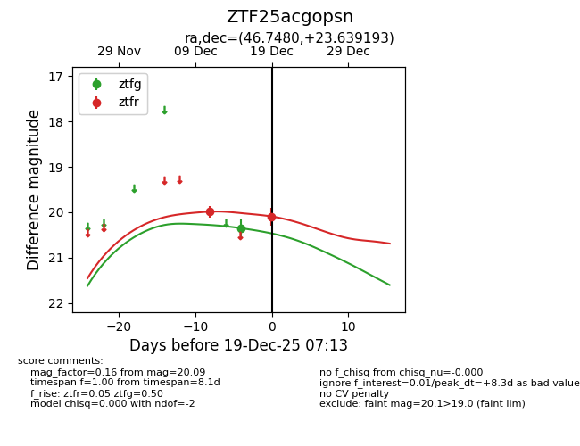
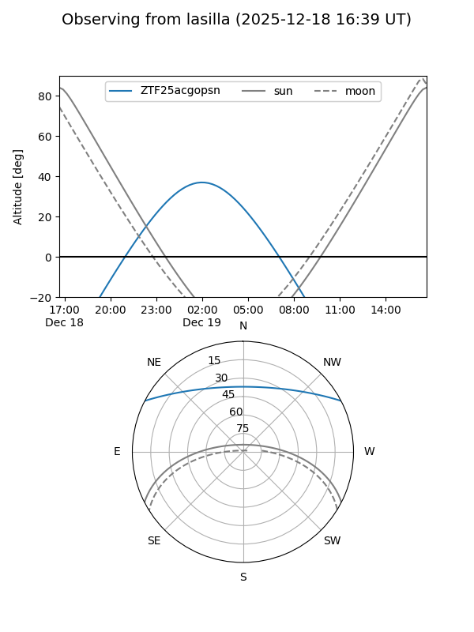
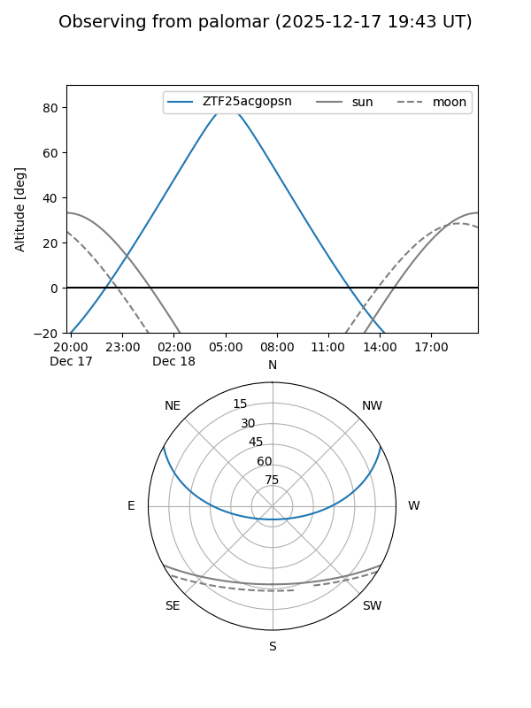
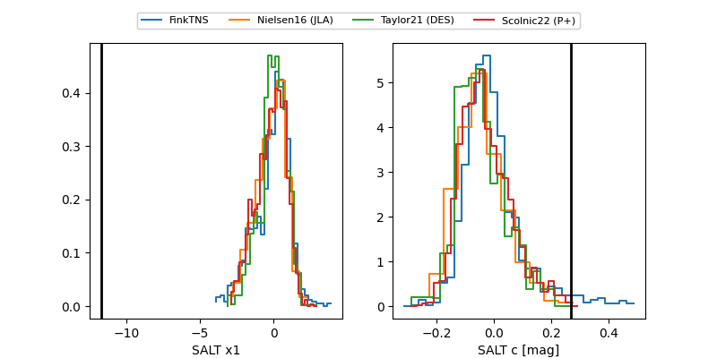

ZTF25acgopsn
Target ZTF25acgopsn at 2025-12-19 07:14
Aliases and brokers:
FINK: fink-portal.org/ZTF25acgopsn
Lasair: lasair-ztf.lsst.ac.uk/objects/ZTF25acgopsn
ALeRCE: alerce.online/object/ZTF25acgopsn
alt names
ZTF25acgopsn (ztf,fink_ztf)
Coordinates:
equatorial (ra, dec) = 46.7480,+23.63919
equatorial (HMS+DMS) = 03:06:59.53,+23:38:21.09
galactic (l, b) = (158.9095,-29.60172)
Flags:
Photometry:
last ztfg=20.35, ztfr=20.09
1 ztfg, 2 ztfr detections
Lightcurve

Visibility


Additional plots
